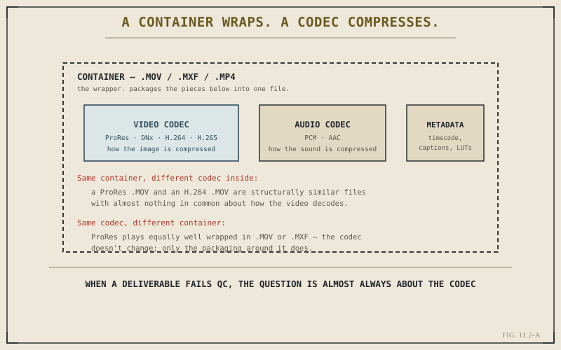

Chapter 2.6 taught codec and container thinking from the ingest side — recognizing what an unfamiliar camera file demands before editing begins. Everything in that chapter applies again here, on the way out rather than the way in, and if anything the stakes are higher: a render is the last thing Resolve does to a project before it leaves your control entirely, and the wrong choice here isn't something a proxy quietly fixes later.
The Same Distinction, Now on the Way Out
Chapter 2.6's core separation still holds exactly as stated: a container — MOV, MXF, MP4 — is the wrapper that packages video, audio, and metadata into one file, without dictating how the video itself is compressed. A codec — ProRes, DNx, H.264, H.265 — is the actual compression method used inside that wrapper. On export, this distinction resolves into two genuinely separate decisions on the render page, and conflating them is a common, avoidable source of a delivery that technically renders but doesn't actually meet what was asked for.

When a deliverable fails QC, the question is almost always about the codec.
Choosing a Video Codec: Mezzanine Versus Delivery-Compressed
The practical choice usually comes down to two very different goals. A mezzanine master — typically an intra-frame codec like ProRes or DNx, the same family Chapter 2.6 flagged as friendly to editing — preserves as much quality as practical for archiving or further processing downstream, at the cost of a large file. A delivery-compressed render — typically long-GOP H.264 or H.265 — trades some of that quality for a dramatically smaller file, suited to actual playback and distribution rather than further editing. Neither is universally correct; the choice depends entirely on what happens to the file after it leaves Resolve, which Chapter 11.5 makes concrete against real destinations.
Choosing a Container: Compatibility, Not Preference
Container choice is less about technical tradeoffs and more about what the receiving system actually expects. MOV is broadly compatible and common for general delivery; MXF is the standard many broadcast and professional post-production pipelines specifically require; MP4 is the near-universal choice for web and social platforms. This is a case where personal familiarity matters far less than destination requirements — a technically fine ProRes file wrapped in the wrong container for a given pipeline can still fail intake at the receiving end.
A container choice isn't really a creative decision or even much of a technical one. It's a compatibility question, answered by whoever's actually going to receive the file — not by whichever wrapper happens to be the default.
Bit Depth and Chroma Subsampling, Now on Export
Chapter 2.6 introduced bit depth and chroma subsampling as concerns for footage coming in — how much tonal and color precision a camera file actually preserves. The same two properties matter identically on the way out, and for a related reason: a render's bit depth and chroma subsampling should generally match or exceed what the grade in Part IX actually needed to look right, rather than being chosen carelessly and quietly discarding precision the grade depended on. Delivering a heavily graded, wide-gamut image at 8-bit 4:2:0 by default, without considering whether that grade actually survives that level of compression, is a real and avoidable way to undo careful color work at the very last step.
Resolution and Frame Rate: Render Settings Versus Timeline Settings
One more distinction worth being precise about: a project's timeline resolution and frame rate, set early on per Chapter 2.7, aren't automatically the same as what a given render job outputs. The Deliver page allows a render to differ from the timeline itself — downscaling a 4K timeline to a 1080p delivery, or conforming to a different frame rate for a specific destination. This is normal and often necessary, precisely because of Chapter 11.1's one-timeline-many-outputs reality, but it's a setting worth actively checking on each render job rather than assuming it silently matches the timeline by default.
With the real technical decisions behind a render now established, Chapter 11.3 turns to the practical shortcut for applying them consistently — presets, which bundle everything this chapter has covered into one reusable, repeatable choice.
Key Concepts to Remember
- Codec and container are separate decisions on export just as they are on ingest — a wrong codec is the more common real failure point.
- Mezzanine, intra-frame masters preserve quality for further use; delivery-compressed, long-GOP renders trade quality for small, distributable files.
- Container choice is a compatibility question answered by the destination pipeline, not a matter of personal preference.
- A render's bit depth, chroma subsampling, resolution, and frame rate should be checked deliberately, not assumed to match the timeline by default.
Cross-References Forward
| → Ch. 11.3 | Presets for Common Destinations — bundles this chapter's codec, container, and format decisions into one reusable choice. |
| → Ch. 11.1 | Revisit why delivery is its own discipline, before this chapter's specific technical decisions within it. |
| → Ch. 2.6 | Revisit codec and container fundamentals from the ingest side, the same concepts this chapter applies on the way out. |